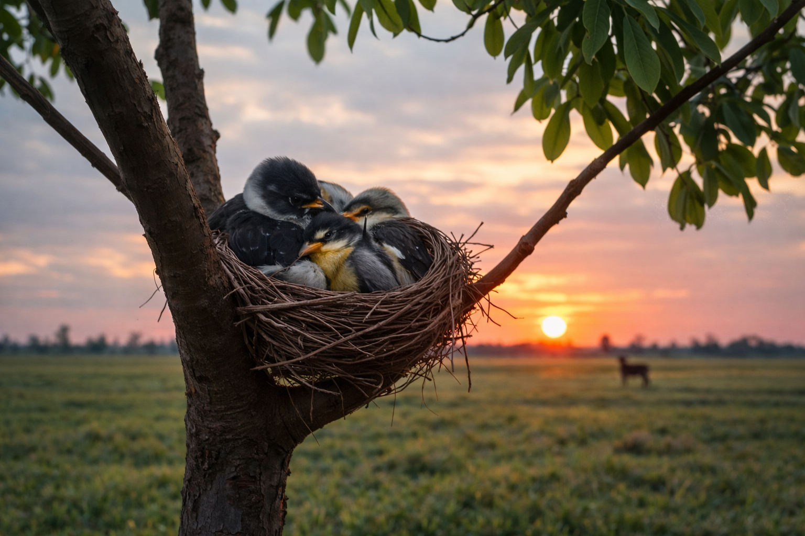
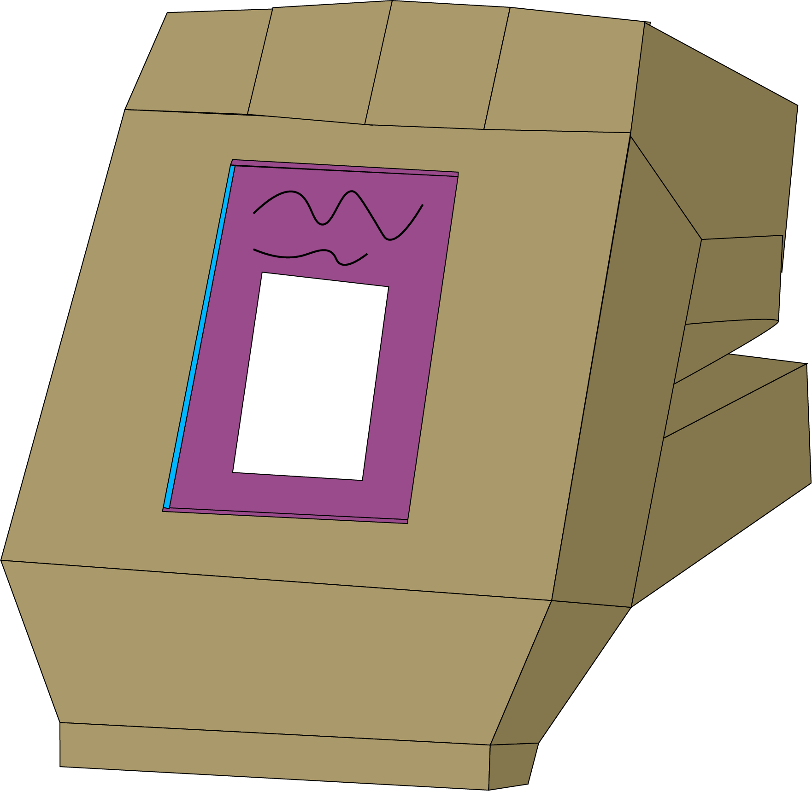
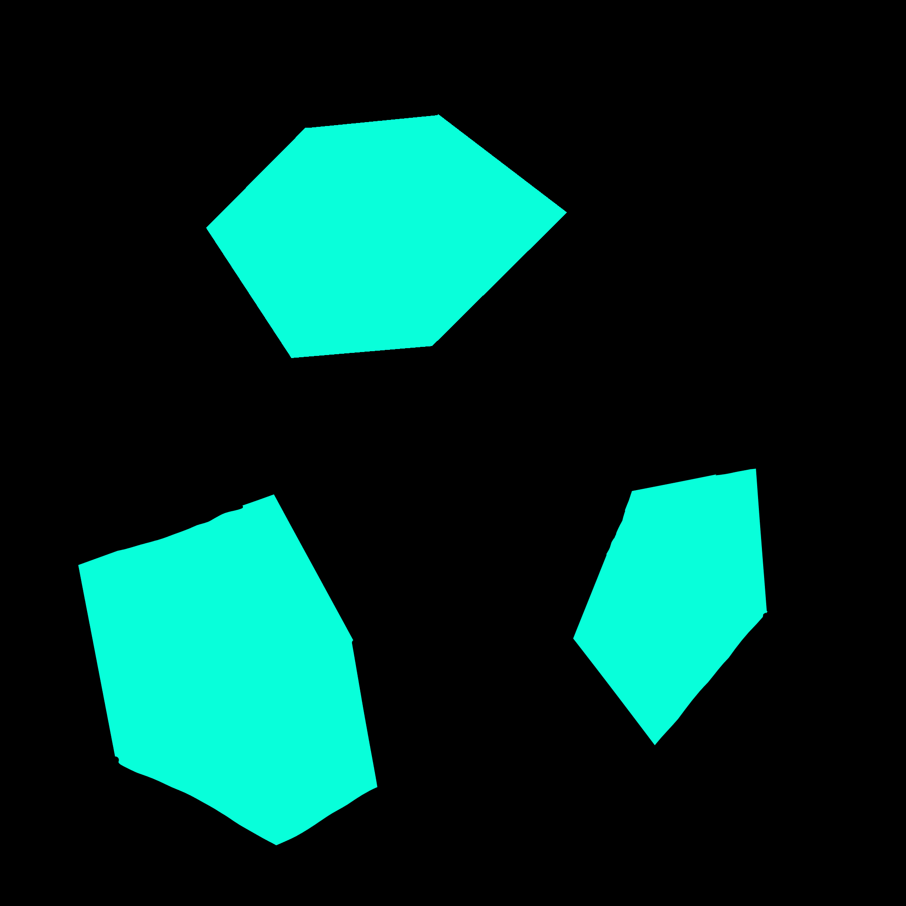
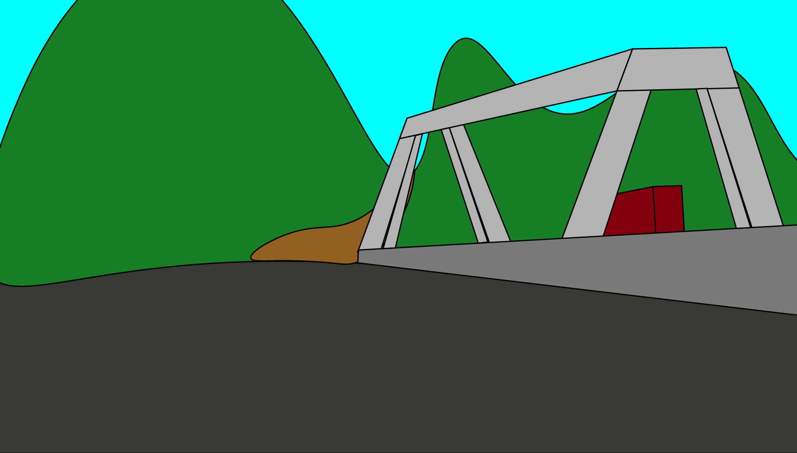
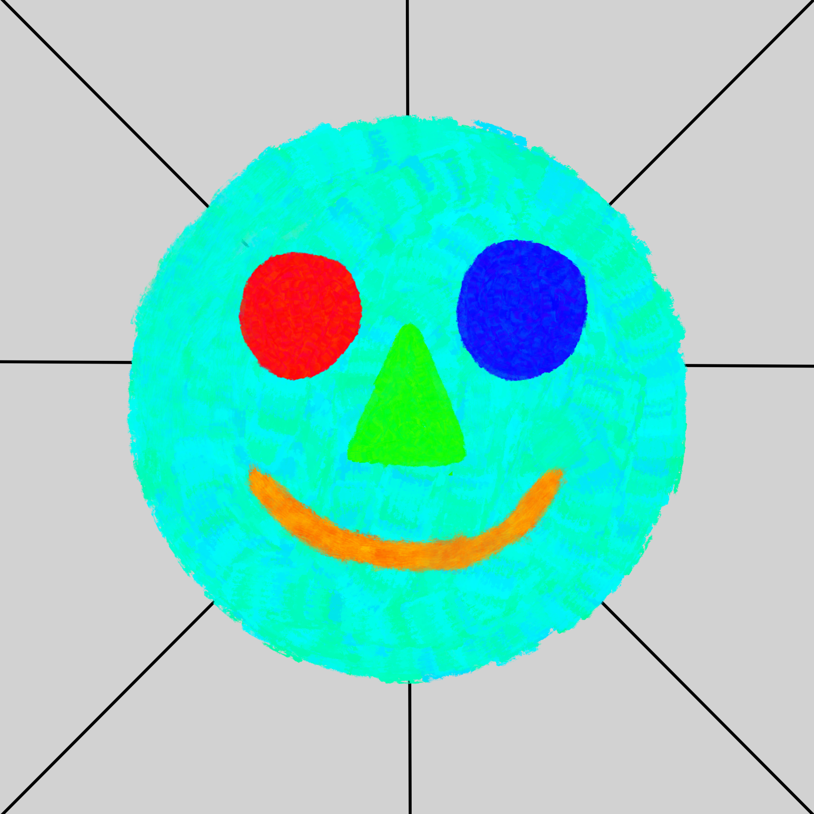
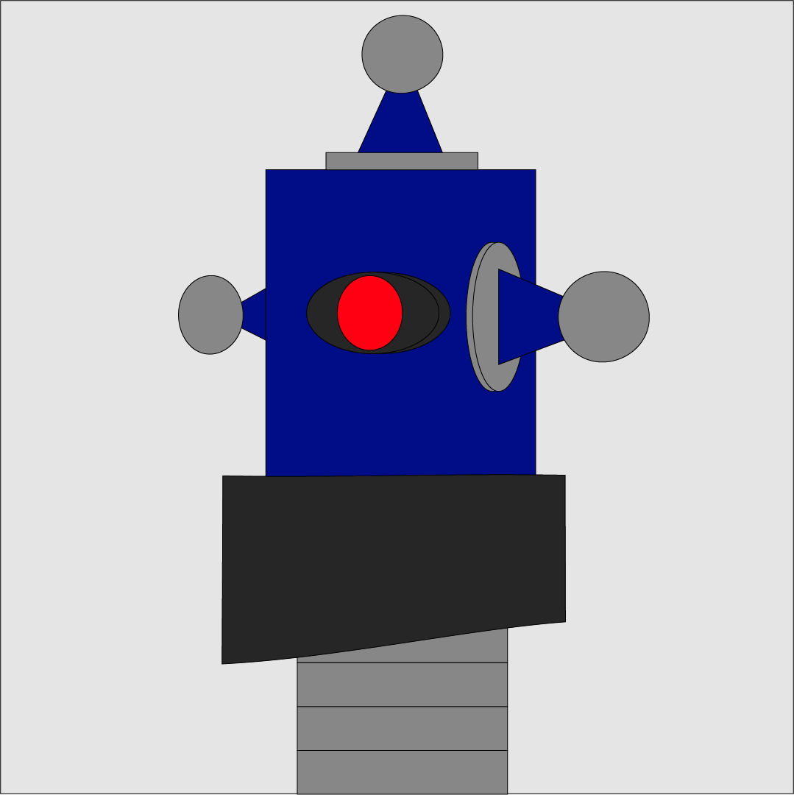

Digital Art and Animation
This page showcases my work in digital design, image-making, and digital animation.
Digital Art
Typologies using AI

My first try with AI art was making an image of birds nesting in a tree.
Open ProjectDigital Art
Pinterest Painting

This piece is an abstract digital collage made from 13 layered images. Through experimentation, I created a stained-glass effect.
Open ProjectDigital Art
Sticker project using Still Life Vector Drawing

This digital sticker, inspired by Diary of a Wimpy Kid, is displayed next to a handmade cardboard sculpture.
Open ProjectAnimation
After Effects Primer Project

I created a simple shape animation in Adobe After Effects as my first step into motion graphics.
Open VideoAnimation
Digital Animation Project

This is a 30-second concept video for a fictional bridge-building game, created in Adobe After Effects with visuals and sound.
Open VideoDigital Art
Primer Project

I made a smiley face in p5.js with some basic shapes. At first, it seemed like a simple task, but it ended up being more interesting than I expected.
Open ProjectDigital Art
Creative Coding Main Project

This project features a geometric robot made with p5.js. It uses simple shapes to create a robot that has a calm, mechanical personality.
Open Project